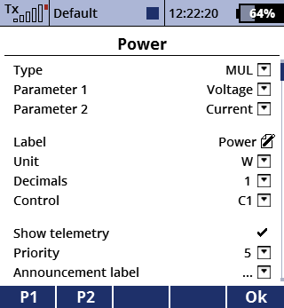
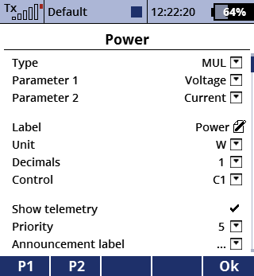
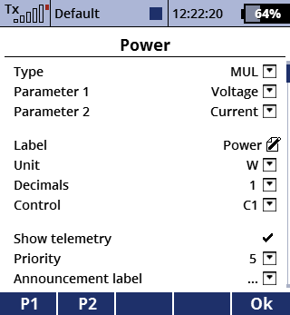
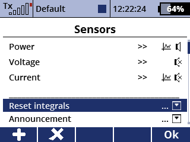

Berechnet einen virtuellen Telemetriewert und registriert virtuelle Logvariablen. Die numerischen Eingaben können Konstanten, Telemetriewerte, Proportionalgeber, Schalter, Schülereingaben, PPM Eingaben und Servo-Outputs sein.
Numerische Eingaben werden in einem Baum aus mathematischen Operationen verarbeitet, die einen oder zwei Parameter besitzen, z.B. ADD, MIN, SQRT, SIN, ABS.
Ein virtueller Sensorwert kann außerdem in einem Telemetriefenster angegzeigt werden.

Ein Sensor mit diesem Aufbau würde das Gleitverhältnis im Format 1 : x berechnen:
Erstelle einen virtuellen Sensor.
Stelle die Bezeichnung, die Anzahl von Dezimalstellen und die Einheit ein.
Bearbeite die Baumstruktur.
[Schließe die App und lade sie mit F(2) neu, um die neuen Logvariablen zu registrieren. Das Logging muss dazu vorher gestoppt werden.]
